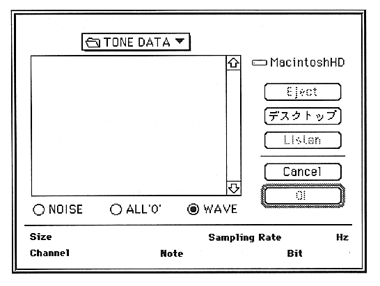

Slot window.

This window shows the details of the waveform you are about to select.
This window displays the SCSP when OK is clicked according to the information of the parameter selected by the loop start address (LSA), loop end address (LEA), and radio button of the sound data of the selected AIFF file. Rewrite the format.
The parameters set in this window are as follows:
NOISE
Use internally generated data (noise) as sound input data.
ALL’0’
Use internally generated data (ALL ”0”) as sound input data.
WAVE
If OK is clicked, the layer dialog box is displayed.
Listen
The selected file is played on the Macintosh.
OK
Capture the waveform.